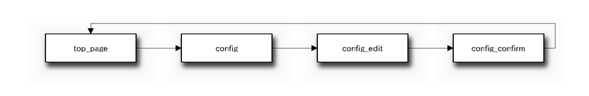

sphinxcontrib-blockdiag を利用すると Sphinx の拡張機能として blockdiag によるブロック図を埋め込むことができます。 ブロック図の埋め込みには blockdiag ディレクティブを利用します。
.. blockdiag::
diagram admin {
top_page -> config -> config_edit -> config_confirm -> top_page;
}

以下のコマンドで sphinxcontrib-blockdiag をインストールします。:
.. code-block:: bash
> easy_install sphinxcontrib-blockdiag
Sphinx プロジェクトで sphinxcontrib-blockdiag を利用するには。 conf.py の extensions に sphinxcontrib.blockdiag を追加します。 また、blockdiag_fontpath に利用する TrueType フォントへのパスを指定します。
# Enabled extensions
extensions = ['sphinxcontrib.blockdiag']
# Fontpath for blockdiag (truetype font)
blockdiag_fontpath = '/usr/share/fonts/truetype/ipafont/ipagp.ttf'
blockdiag ディレクティブは指定した箇所にブロック図を埋め込みます。 ブロック図の元となるテキストはファイルもしくは テキストブロックで渡すことができます。
ファイルを指定する場合は blockdiag ディレクティブの引数に ファイル名を指定します。
テキストブロックを利用する場合は blockdiag ディレクティブ以降の行に ブロックを記述します。
例:
.. blockdiag:: foobar.diag
.. blockdiag::
diagram {
// some diagrams are here.
}
blockdiag で利用する TrueType フォントへのパスを指定します。
blockdiag_antialias に True が指定された場合、 アンチエイリアス処理を加えた画像を生成します(初期値：False)。